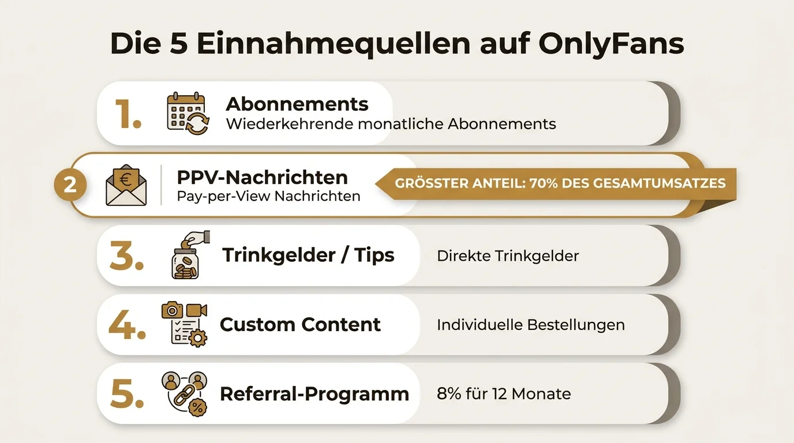
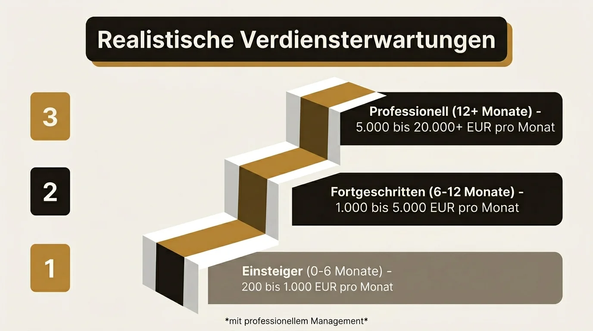

Einnahmequellen, Verdienst-Statistiken, Steuern & Tipps — der definitive deutsche Guide für Creator.
Mit OnlyFans Geld verdienen: Der komplette Guide für Creator in Deutschland
5,8 Milliarden Dollar — so viel hat OnlyFans allein 2024 an seine Creator ausgezahlt. Bei einem Bruttoumsatz von 7,22 Milliarden Dollar ist die Plattform längst kein Nischenphänomen mehr, sondern eine ernstzunehmende Einkommensquelle für über 4 Millionen aktive Creator weltweit. Kein Marketing-Blabla, keine leeren Versprechen — sondern echte Zahlen, bewährte Strategien und ehrliche Einschätzungen.
Wie funktioniert OnlyFans?
OnlyFans ist eine Plattform, auf der Creator exklusive Inhalte hinter einer Paywall anbieten. Fans zahlen für den Zugang — entweder über ein monatliches Abonnement oder für einzelne Inhalte. Das Modell ist simpel und transparent.
- Auszahlungen: OnlyFans zahlt mit einer Verzögerung von sieben Tagen aus — per Banküberweisung, sobald der Mindestbetrag erreicht ist
- Kein Algorithmus-Roulette: Anders als bei Instagram oder TikTok gibt es keinen Algorithmus, der deine Reichweite drosselt. Jeder zahlende Abonnent sieht jeden deiner Beiträge
- Dein Erfolg hängt von dir ab: Nicht von Plattform-Launen, sondern von deiner Fähigkeit, Fans zu gewinnen und zu halten
Noch keinen Account? Hier findest du die Schritt-für-Schritt-Anleitung: OnlyFans starten — Der komplette Leitfaden
Die 5 Einnahmequellen auf OnlyFans
Viele Einsteiger denken, OnlyFans Einnahmen bestehen nur aus monatlichen Abos. Das ist einer der größten Irrtümer — und der Hauptgrund, warum viele Creator unter ihrem Potenzial bleiben.
Abonnements (Subscriptions)
Das monatliche Abo ist der sichtbarste Einnahmekanal (typisch: 5–25 Dollar/Monat). Was viele überrascht: Abos machen laut einer Analyse von Kartik Ahuja nur etwa 4,11 Prozent der Einnahmen von Top-Creatorn aus. Sie sind der Türöffner, nicht die Haupteinnahme.
Pay-per-View (PPV)
PPV-Nachrichten sind einzelne Inhalte, die du per Direktnachricht gegen eine Einmalzahlung schickst. PPV ist deutlich lukrativer als das Basis-Abo und einer der stärksten Umsatztreiber auf der Plattform.
Trinkgelder (Tips)
Fans können dir jederzeit Trinkgelder schicken — als Reaktion auf einen Beitrag, während eines Livestreams oder einfach so. Bei einer engagierten Fanbase ein signifikanter Einnahmekanal. Manche Creator verdienen mehrere hundert Dollar pro Woche allein durch Tips.
Custom Content
Individuelle Inhalte auf Bestellung — zugeschnitten auf die Wünsche einzelner Fans. Custom Content hat die höchsten Margen, weil Fans bereit sind, Premiumpreise für persönliche Inhalte zu zahlen. Sogenannte „Whales“ geben dabei laut Rest of World über 1.300 Dollar pro einzelnem Kauf aus.
Referral-Programm
OnlyFans zahlt dir 5 Prozent der Einnahmen von Creatorn, die du auf die Plattform bringst — für deren erstes Jahr. Kein Hauptgeschäft, aber ein netter Bonus, wenn du andere Creator in deinem Netzwerk hast.

Realistische Verdiensterwartungen
„Wie viel verdient man auf OnlyFans?“ — die ehrliche Antwort: Es kommt darauf an. Statt vager Versprechen hier die echten Zahlen, eingeteilt nach Erfahrungslevel.
Account aufbauen, Content-Formate testen, erste Abonnenten gewinnen. Wenig am Anfang ist normal und kein Grund aufzugeben.
Routine entwickelt, Zielgruppe verstanden, PPV und Chatting gezielt eingesetzt. Fanbase wächst organisch.
Klares System, möglicherweise mit Manager, alle Einnahmequellen strategisch genutzt.
Der Durchschnitt ist irreführend, weil er auch inaktive Accounts einschließt. Die Wahrheit für aktive, engagierte Creator liegt dazwischen: Einige hundert bis einige tausend Dollar pro Monat sind mit konsequenter Arbeit realistisch erreichbar.
Was den Verdienst beeinflusst
- Nische und Zielgruppe: Manche Nischen haben zahlungskräftigere Fans als andere
- Content-Qualität: Professionelle Fotos und Videos performen besser
- Posting-Frequenz: Regelmäßigkeit schafft Gewohnheit und hält Abonnenten
- Chat-Aktivität: Aktives Chatting ist der stärkste Hebel für mehr Umsatz
- Marketing: Ohne Promotion außerhalb von OnlyFans wächst die Fanbase kaum
- Zeitinvestment: Mehr strategische Zeit bedeutet in der Regel mehr Einnahmen

Erfolgsfaktoren: Was Top-Earner anders machen
Der Unterschied zwischen Creatorn, die aufgeben, und solchen, die davon leben können, lässt sich auf fünf Faktoren herunterbrechen.
Content-Qualität statt Content-Masse
Du brauchst kein Profi-Equipment, aber dein Content sollte professionell wirken. Gutes Licht, ein aufgeräumter Hintergrund und eine konsistente Ästhetik machen mehr aus als teure Kameras. Fans zahlen für ein Erlebnis.
Konsistenz schlägt Perfektion
Ein realistischer Posting-Plan, den du einhältst, ist wertvoller als sporadische Perfektion. Drei bis fünf Feed-Posts pro Woche plus regelmäßige Stories und DM-Interaktion sind ein guter Richtwert. Fans, die für ein Abo zahlen und tagelang nichts sehen, kündigen.
Nische und Positionierung
Die erfolgreichsten Creator bedienen eine klar definierte Nische. Je spezifischer deine Positionierung, desto loyaler deine Fanbase und desto höher die Zahlungsbereitschaft. „Für jeden etwas“ funktioniert auf OnlyFans nicht.
Marketing außerhalb der Plattform
OnlyFans selbst hat keine Discovery-Funktion. Deine Fans kommen von außen — über Instagram, TikTok, Reddit, Twitter/X oder andere Kanäle. Ohne eine durchdachte Social-Media-Strategie bleibt dein Profil unsichtbar.
Fan-Engagement als Geschäftsmodell
70 Prozent der Top-Earner-Einnahmen stammen aus DMs. Persönliche Interaktion ist kein Nice-to-have, sondern dein Hauptgeschäft. Wer das versteht und umsetzt, verdient mehr als Creator mit der dreifachen Followerzahl, die nur passiv posten.
OnlyFans als Nebenjob
Kann man Geld verdienen mit OnlyFans, ohne den Hauptjob aufzugeben? Ja — und für die meisten ist das der sinnvollste Einstieg.
- Vorproduzieren ist der Schlüssel: Am Wochenende Content für die nächste Woche erstellen — spart unter der Woche erheblich Zeit
- Klein starten und skalieren: Lieber drei konsistente Posts pro Woche als ein ambitionierter Tagesplan, den du nach zwei Wochen aufgibst
- Automatisierung nutzen: Willkommensnachrichten, Massen-DMs und geplante Posts lassen sich automatisieren
Anonym Geld verdienen auf OnlyFans
Eines der häufigsten Bedenken: „Ich will nicht, dass mein Umfeld davon erfährt.“ Die gute Nachricht — du kannst auf OnlyFans komplett anonym arbeiten. Viele erfolgreiche Creator zeigen nie ihr Gesicht und verdienen trotzdem gut.
Die wichtigsten Stellschrauben: ein Künstlername, clevere Kameraperspektiven, Identitätsschutz bei der Verifizierung und eine durchdachte Social-Media-Strategie unter Pseudonym.
Den kompletten Leitfaden findest du hier: OnlyFans ohne Gesicht: Der komplette Anonymitäts-Guide
Steuern und Gewerbe: Was du wissen musst
Sobald du mit OnlyFans Geld verdienst, bist du in Deutschland dazu verpflichtet, diese Einnahmen zu versteuern. Das gilt ab dem ersten Euro und unabhängig davon, ob es dein Haupt- oder Nebenverdienst ist.
- Du brauchst ein Gewerbe (Anmeldung beim Gewerbeamt, Fragebogen zur steuerlichen Erfassung)
- OnlyFans Einnahmen sind einkommensteuer- und umsatzsteuerpflichtig
- Die Kleinunternehmerregelung kann im ersten Jahr sinnvoll sein
- Eine Steuererklärung ist Pflicht — ein Steuerberater mit Erfahrung in der Creator Economy ist dringend empfohlen
Alles Wichtige zu Steuern, Gewerbeanmeldung und Buchhaltung: OnlyFans Steuern & Gewerbe — Der komplette Guide. Lies ihn, bevor du mit dem Verdienen anfängst.
Professionelles Management: Wann es sich lohnt
Ab einem gewissen Punkt stehst du vor einer Entscheidung: Alles selbst machen oder professionelle Hilfe holen? Die Antwort hängt von deiner Situation ab.
Management lohnt sich, wenn:
- Du mehr als 2.000–3.000 Dollar pro Monat verdienst und weiter wachsen willst
- Du das Chatting nicht mehr allein schaffst (DMs sind zeitintensiv, aber dein größter Umsatzhebel)
- Du dich auf Content-Erstellung konzentrieren willst, statt Stunden im Chat zu verbringen
- Du Hilfe bei Marketing, Strategie oder Account-Optimierung brauchst
Eine professionelle Management-Agentur wie Venus Manager übernimmt dabei typischerweise Chatting, Promotion-Strategie, Account-Optimierung und Umsatzsteigerung — während du dich auf das konzentrierst, was nur du tun kannst: Content erstellen.
Was ein OnlyFans Manager genau macht und worauf du bei der Wahl achten solltest: Was macht ein OnlyFans Manager?
Typische Fehler vermeiden
Fünf Fehler, die wir bei Venus Manager immer wieder sehen — und die Creator bares Geld kosten.
Nur auf Abos setzen
Abos machen nur einen Bruchteil der Einnahmen aus. Wer kein PPV, kein Custom Content und kein aktives Chatting betreibt, lässt den Großteil seines Umsatzpotenzials liegen.
Kein Marketing außerhalb von OnlyFans
OnlyFans hat keine Suchfunktion und keinen Algorithmus, der neue Fans zu dir bringt. Ohne Präsenz auf Reddit, Twitter/X, Instagram oder TikTok findet dich niemand.
Zu früh aufgeben
Die meisten Creator geben innerhalb der ersten drei Monate auf. Genau in dieser Phase passiert noch nicht viel — aber der Grundstein wird gelegt. Wer nach vier Wochen aufhört, verpasst den Moment, an dem der Schneeball ins Rollen kommt.
Preise zu niedrig ansetzen
3 Dollar für ein Abo, 5 Dollar für PPV — das zieht Schnäppchenjäger an, keine loyalen Fans. Qualitäts-Content verdient Qualitäts-Preise.
Steuern ignorieren
Kein Gewerbe angemeldet, keine Rechnungen, keine Rücklagen. Die Creator Economy wird zunehmend vom Finanzamt beobachtet — und durch DAC7 weiß das Finanzamt ohnehin Bescheid. Kümmere dich von Tag eins um die Formalitäten.
Häufig gestellte Fragen
Geld verdienen mit OnlyFans ist realistischer denn je. Die Plattform hat im vergangenen Jahr 5,8 Milliarden Dollar an Creator ausgezahlt, die Creator Economy wächst laut Goldman Sachs auf ein projiziertes Volumen von 480 Milliarden Dollar bis 2027.
Aber — OnlyFans ist kein Selbstläufer. Es ist ein echtes Business, das Strategie, Konsistenz und Engagement erfordert. Die größten Hebel sind nicht mehr Posts, sondern besseres Chatting, durchdachtes Marketing und eine klare Positionierung.
Starte mit den Grundlagen, nutze die verlinkten Spezial-Guides für die Details und baue Schritt für Schritt dein OnlyFans-Business auf.
Bereit, das Maximum herauszuholen?
Venus Manager hilft deutschsprachigen Creatorn dabei, das Maximale aus ihrem Account herauszuholen — vom Chatting über die Strategie bis zum Wachstum.
Kostenloses Erstgespräch buchen